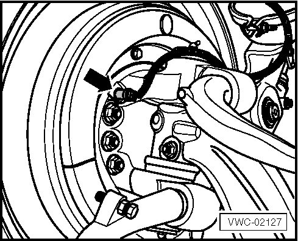
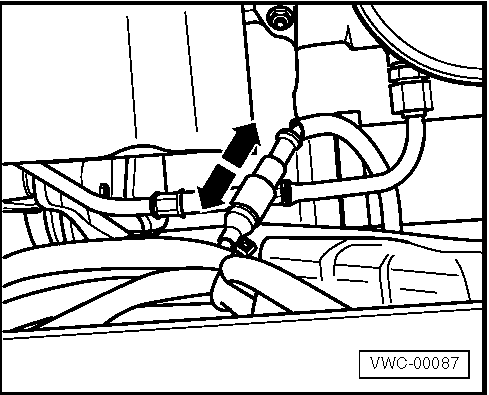
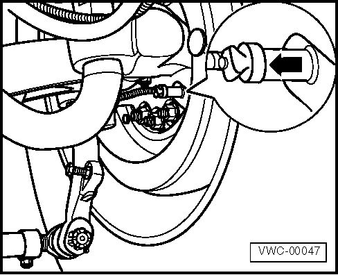
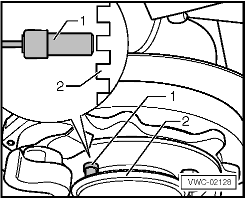
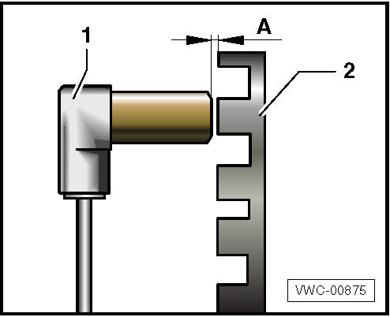

Informações Importantes
Danos severos ao sistema elétrico (curto-circuito). • Interromper a corrente (desligar o interruptor principal da bateria) e soltar os cabos da bateria.
Danos aos componentes por conexões parafusadas incorretamente. • Caso parafusadeiras de impacto sejam utilizadas, estas só podem ser utilizadas com aperto inicial de no máx. 50% do valor do torque de aperto indicado. • O aperto final deve ocorrer sempre manualmente, utilizando o torquímetro. Localização
O sensor de rotação da roda dianteira (seta) está instalado na chapa de proteção do guarda-pó.

Remoção
- Estacionar o veículo em um local de solo plano e firme e aplicar o freio de estacionamento. - Com a ignição desligada, desconectar os cabos da bateria, iniciando primeiramente pelo cabo negativo (-). - Calçar as rodas do veículo para evitar que o mesmo se desloque durante os trabalhos no sistema de freios. - Desconectar o conector do sensor no sentido das setas e remover o suporte de fixação do chicote, conforme imagem abaixo. 
- Localizar o sensor de rotação do
lado de dentro da roda e removê-lo, puxando-o conforme indicado pela
seta da ilustração abaixo. 
Limpeza e inspeção
- Caso o sensor seja reinstalado, deve-se limpar o sensor de rotação com pincel seco ou aplicar levemente ar comprimido sem umidade. - Verificar se há desgaste ou danos. Instalação
Antes da montagem, o furo de alojamento do sensor deve ser lubrificado com uma graxa resistente à alta temperatura.
- Introduzir o sensor (1) em seu alojamento com a mão até encostar (sem bater) na roda dentada (2) e conectá-lo ao respectivo conector.

- Reconectar os cabos da bateria iniciando primeiramente pelo positivo (+) e, em seguida, pelo negativo (-) O ajuste do posicionamento do sensor
(1) em relação à roda dentada (2) ocorrerá automaticamente no primeiro
movimento da roda, porém não poderá ultrapassar a 0,6 mm, indicado pela
letra A da ilustração.

|
||||||||||||